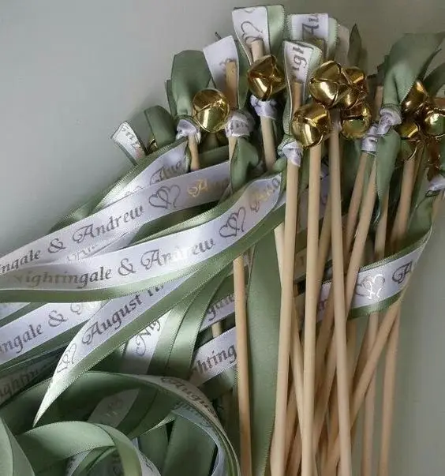

Ribbons in a symbolic ceremony give you great freedom to personalise your wedding. Among the many rituals, the ribbon ritual, also known as "handfasting", is one of the most symbolic and moving. Including it in a symbolic wedding ceremony creates an unforgettable moment full of meaning, strengthening the promises and values the couple wish to honour throughout their life together.
Origins and meaning
Handfasting is an ancient ritual rooted in Celtic traditions, practised at pagan wedding ceremonies. In these cultures, binding the couple's hands with ribbons or cords symbolised their mutual commitment and spiritual union. The term "handfasting" comes from the Old English "hand-fæstung", meaning "to bind the hands".
Traditionally, the ribbon ritual marked a temporary commitment, often lasting a year and a day, after which the couple could decide to make their union permanent or to part ways. It allowed couples to test their compatibility before committing for life.
Today, the ritual is often included in symbolic or pagan wedding ceremonies for its rich symbolism. Its meaning runs deep: the ribbons represent the bonds of love, faithfulness, respect and trust that unite the couple. Each ribbon can also be linked to a specific promise or value the couple wish to honour in their marriage.

How to perform the ribbon ritual
Preparing the ribbons
– Choose ribbons or cords in different colours, each representing a specific value or promise (for example, red for passion, blue for faithfulness, green for prosperity).
– You can use silk, satin or any other material that is meaningful to you. Some couples even choose ribbons embroidered with their names or wedding date for an extra personal touch.
Introducing the ritual
– The officiant explains to the guests the meaning of the ribbon ritual and what each colour represents.
– The couple can also prepare a short speech explaining why they chose this ritual and what each ribbon means to them. It is a way of sharing with their loved ones the values and promises they consider essential to their union.
Binding the hands
– The couple stand facing each other and join hands, their arms forming an infinity symbol.
– The officiant, a loved one or the couple themselves tie the ribbons around their joined hands while speaking vows or promises.
– Each ribbon is wrapped around the hands and can be fastened with a symbolic knot, representing the couple's unity and commitment.
– Once all the ribbons are tied, the officiant offers a blessing or a wish for the couple.
– The couple can then gently slip off the ribbons and keep them as a memento of their commitment. Some choose to frame them or include them in a wedding album.
Practical tips for a successful ribbon ritual
Preparation: make sure you have enough ribbons and lay them out so they are easily within reach during the ceremony.
Coordination: if you involve loved ones in the ritual, hold a short rehearsal so they feel comfortable with their roles.
Clarity: explain the meaning of each ribbon clearly to your guests, either through the officiant or in a printed programme.
Personalising the ritual
One of the great advantages of a symbolic ceremony is the chance to personalise every aspect of it. Here are a few ideas for adapting the ribbon ritual to your wedding:
Involve your guests
Invite friends or family members to tie the ribbons and speak vows or blessings. This makes the ceremony even more personal and inclusive, letting your loved ones take an active part in this special moment.
Personalised ribbons
Use ribbons embroidered with your names, a special date or meaningful words. You can also choose ribbons with different textures or patterns to represent the different facets of your relationship.
Themes and colours
Match the ribbon colours to your wedding theme or to cultural elements that matter to you. For example, you could choose colours with a particular meaning in your culture or personal story.
Examples of ribbon colour meanings
Each ribbon colour can carry a particular meaning. Here are a few common examples:
Red
Passion, love, courage
Blue
Faithfulness, trust, peace
Green
Prosperity, health, luck
Yellow
Joy, happiness, optimism
White
Purity, sincerity, simplicity
Purple
Spirituality, mystery, nobility
Orange
Energy, creativity, enthusiasm
Pink
Romance, gentleness, tenderness
The couple can choose the colours that resonate most with them and their love story, making the ritual even more meaningful.
In short…
The ribbon ritual is a beautiful, meaningful way to symbolise the union and the promises exchanged at a symbolic ceremony. By weaving this ancient tradition into your ceremony, you create not only a moving moment but also a tangible keepsake of your mutual commitment. Whether you follow the ancient traditions or add your own personal touch, this ritual will bring an extra dimension of beauty and depth to your wedding.
The flexibility and personalisation the ribbon ritual offers let couples create a unique and deeply meaningful ceremony. Through the choice of colours, the involvement of guests or the symbolism of the promises, every aspect of the ritual can be adapted to reflect the couple's values and story, making handfasting an unforgettable part of their special day.